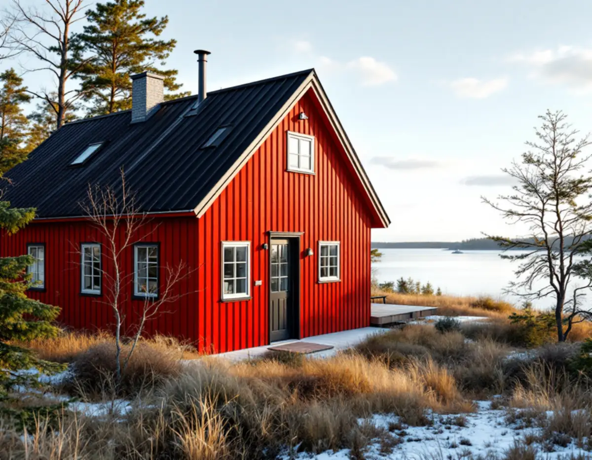
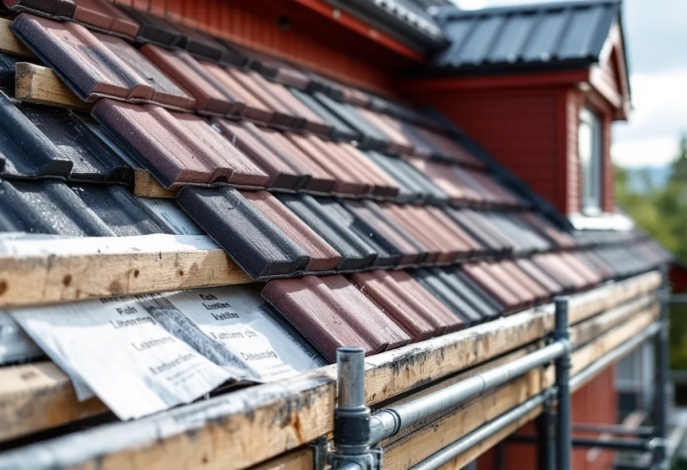
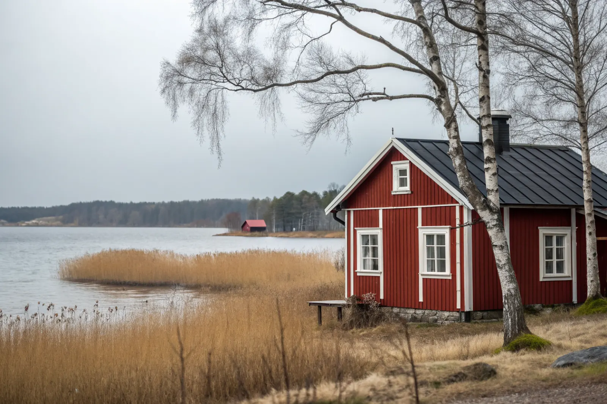

Takbyte på Ekerö
Byte av tegel-, betong- och plåttak.
Takbyte på Ekerö →
Ekerö kommun består av öar i Mälaren – Ekerö, Färingsö, Munsö, Adelsö med flera.
Skicka gärna en bild på taket.
Något blev fel. Kontrollera uppgifterna eller ring 08 12 410 276.
Vi tittar på jobbet på plats innan du får offert.
Du ser vad som ingår och vad det kostar.
Vi drar av ROT direkt och sköter ansökan.
Geal Entreprenad AB, Bromma. Org.nr 559303-7566.

Vi är takläggare på Ekerö för villor, gårdar och fritidshus som blivit permanentboenden, i bland annat Ekerö centrum, Stenhamra, Träkvista och Skå.
Bebyggelsen på Ekerö är blandad: villaområden från 1960-talet och framåt kring Ekerö centrum, Träkvista och Stenhamra, äldre gårdar och torp på Färingsö och Munsö, och många tidigare fritidshus som byggts om till permanentboende.
Mälaren är sötvatten, så saltet som sliter på plåten ute i skärgården är inget stort problem här. Däremot ger de öppna vattenytorna vind som tar i takfötter, nockar och plåtdetaljer, och strandnära hus får mer fukt och påväxt på taken.
Till Adelsö går bilfärjan, och flera öar nås via smala vägar. Vi planerar materialleveranser och etablering i förväg så att vi kan arbeta effektivt även längre ut.
Oavsett om du behöver ett komplett takbyte eller en riktad renovering ger vi en tydlig bedömning och offert. Vi arbetar även i grannområden – se alla områden vi arbetar i.

Ombyggda fritidshus har ofta tak som lagts för säsongsboende: papp på råspont, tunn läkt eller plåt utan ordentligt underlag. När huset värms året runt och vinden isoleras uppstår kondens om luftspalten inte räcker. Vi ser också tak där flera tillbyggnader lagts ihop med olika lutningar och material.
På äldre gårdar på Färingsö och Munsö finns lertegel och skivtäckningar av olika slag, och på ekonomibyggnader ibland gamla fibercementskivor som kan innehålla asbest. De ska hanteras av behörig personal vid rivning.
Bygglov och anmälan hanteras av Ekerö kommun. Att byta material eller kulör på taket till en villa kräver normalt inget lov sedan 1 december 2025. Kring Drottningholm, som är världsarv, och i andra särskilt värdefulla miljöer gäller dock bygglovsplikt – stäm av med kommunen först.
Många tomter på öarna nås via smala grusvägar. Vi kontrollerar framkomligheten för lastbil, container och ställning vid platsbesöket och planerar leveranserna därefter.
Byte av tegel-, betong- och plåttak.
Takbyte på Ekerö →Riktade åtgärder som förlänger takets liv.
Takrenovering på Ekerö →Bedömning av skick inför beslut.
Takbesiktning på Ekerö →Nytt ytskydd på plåttak.
Takmålning på Ekerö →Skonsam tvätt och mossbehandling.
Taktvätt på Ekerö →Nytt plåttak och plåtarbeten.
Plåttak på Ekerö →Ekerö är vår närmaste granne västerut – från Bromma når vi Ekerö via Nockebybron. Det ger korta restider för besiktning och uppföljning.
Läs mer om tak på villa eller jämför takbyte och takrenovering innan du bestämmer dig.
Vi arbetar även i Bromma.
Takläggare i Bromma →Vi arbetar även i Hässelby.
Takläggare i Hässelby →Vi arbetar även i Vällingby.
Takläggare i Vällingby →Eller ring 08 12 410 276, mån–fre 08–17.
Skicka gärna en bild på taket.
Något blev fel. Kontrollera uppgifterna eller ring 08 12 410 276.